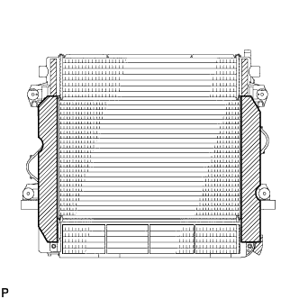
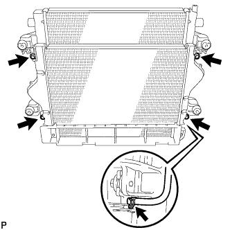

ПРОМЕЖУТОЧНЫЙ ОХЛАДИТЕЛЬ (для моделей без DPF) > СНЯТИЕ |
| 1. СНИМИТЕ РАДИАТОР В СБОРЕ С ПРОМЕЖУТОЧНЫМ ОХЛАДИТЕЛЕМ В СБОРЕ |
Снимите радиатор в сборе с промежуточным охладителем в сборе (Нажмите здесь).
| 2. СНИМИТЕ УПЛОТНЕНИЕ МЕЖДУ КРОНШТЕЙНОМ И РАДИАТОРОМ № 2 |
|  |
Снимите 2 уплотнения между кронштейном и радиатором № 2 с промежуточного охладителя.
| 3. СНИМИТЕ ПРОМЕЖУТОЧНЫЙ ОХЛАДИТЕЛЬ В СБОРЕ |
|  |
Отсоедините вакуумный шланг от промежуточного охладителя.
Выверните 4 болта и снимите промежуточный охладитель с радиатора.